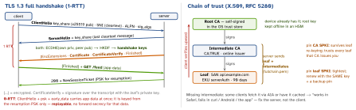

networking · folio
In one line: TLS gives confidentiality (AEAD), integrity and server authentication: an ephemeral ECDHE exchange makes the keys (forward secrecy), and a certificate chain ending in a root the device already trusts proves the key belongs to the hostname. TLS 1.3 (RFC 8446) does it in 1 RTT; resumption can send data in 0 RTT — replayable.
Download PDF Print view LaTeX source


How it works
- Key exchange: each side sends an ephemeral ECDHE public key; the shared secret feeds HKDF → handshake, then traffic keys. The certificate key only signs (CertificateVerify) — it never encrypts a secret.
- Forward secrecy: ephemeral keys are discarded, so a server key stolen later cannot decrypt recorded sessions. 1.2 static-RSA key transport had no FS.
- 1.3 suites name only AEAD + hash:
TLS_AES_128_GCM_SHA256,TLS_AES_256_GCM_SHA384,TLS_CHACHA20_POLY1305_SHA256. Group (x25519, P-256) and signature (ECDSA, RSA-PSS, Ed25519) are negotiated separately; a 1.2 suite bundled all four (ECDHE-RSA-AES128-GCM-SHA256). - Wrong key_share guess → HelloRetryRequest → 2 RTT. Resumption: ticket → PSK; PSK + fresh ECDHE keeps FS, 0-RTT data does not.
TLS 1.2 (RFC 5246) vs 1.3
| 1.2 | 1.3 | |
|---|---|---|
| handshake | 2 RTT (Hello → KeyExchange + Finished) | 1 RTT; 0-RTT on resumption |
| key exchange | RSA transport or (EC)DHE | (EC)DHE only: FS mandatory |
| certificate | sent in cleartext | encrypted |
| removed | — | RSA kx, CBC, RC4, SHA-1, compression, renegotiation |
Validation — what SecTrust checks
- Path leaf → intermediates → a root in the trust store; signature at every link; intermediates
CA:TRUE. - Validity: notBefore ≤ now ≤ notAfter — the device clock.
- Hostname vs SAN (iOS 13+: CN ignored; EKU serverAuth, RSA ≥ 2048, SHA-2).
- Revocation: CRL (list) · OCSP (live query, leaks who you visit) · stapling (server attaches a signed OCSP answer). Clients soft-fail: blocked responder = pass. Let’s Encrypt ended OCSP in 2025 (CRLs).
- CT (RFC 6962): public append-only logs; Apple requires SCTs. Then your policy: ATS, pins — after default validation, never instead.
Example — mTLS: answer the client-certificate challenge
func urlSession(_ s: URLSession, didReceive c: URLAuthenticationChallenge)
async -> (URLSession.AuthChallengeDisposition, URLCredential?) {
switch c.protectionSpace.authenticationMethod {
case NSURLAuthenticationMethodClientCertificate:
let id = keychainIdentity() // SecIdentity = cert + private key
return (.useCredential, URLCredential(identity: id,
certificates: nil, persistence: .forSession))
default: // server trust: keep default checks
return (.performDefaultHandling, nil)
}
}Pinning — what to pin
| Pin | Survives | Risk |
|---|---|---|
| leaf cert | nothing: every renewal | bricks old binaries every 90 days |
| leaf SPKI | renewal with same key | key compromise → backup pin |
| interm. SPKI | any leaf re-key by that CA | CA rotates its intermediate |
| root SPKI | almost everything | weak: any leaf of that CA passes |
Always ≥ 2 pins: current + an offline backup key. No code: NSPinnedDomains → NSPinnedLeafIdentities / NSPinnedCAIdentities (SPKI-SHA256-BASE64). Have a kill path (pins in remote config) or accept a forced update.
mTLS and ATS
mTLS: server sends CertificateRequest; client answers Certificate + CertificateVerify — proves possession of a key, no bearer secret on the wire. Cost: issuing + rotating a per-device cert (SecPKCS12Import of a .p12). ATS: HTTPS, TLS ≥ 1.2, FS suites, valid chain; narrow NSExceptionDomains; NSAllowsArbitraryLoads needs a review reason.
Failures you actually meet
| missing intermediate | browser OK, others fail: serve the full chain |
| expired root / cross-sign | DST Root CA X3 (30 Sep 2021) broke old devices |
| device clock wrong | -1201 bad date · -1204 not yet valid |
| name not in SAN | -1202 server certificate untrusted |
| private CA / self-signed | -1203 unknown root: trust the root, not the leaf |
http:// under ATS | -1022 (ATS requires a secure connection) |
| proxy / captive portal | MITM certificate: pinning fails, as designed |
URLError names checked; the numeric codes(unverified).
Traps
- “Disable validation for testing” ships a MITM: encryption to the attacker. Use a test CA.
- 0-RTT is not free speed: early data is replayable — idempotent GETs only.
- A DV cert proves domain control at issuance, not honesty.
- SNI leaks the hostname in cleartext; ECH closes it.
SecKeyCopyExternalRepresentationgives the raw key, not SPKI — prepend the ASN.1 header before hashing or the pin never matches.